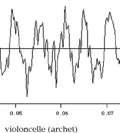
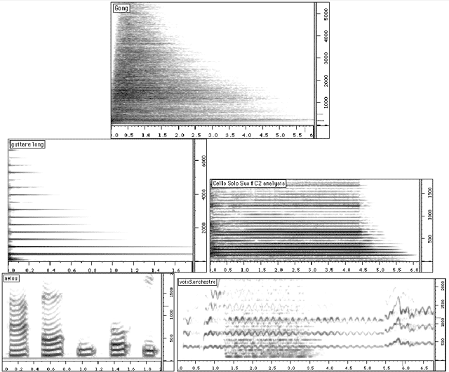
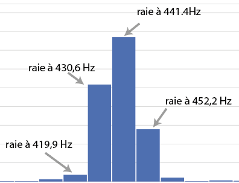
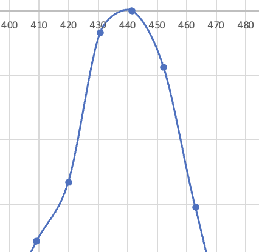

Analyse du son
Un des apports de l’informatique réside dans les possibilités offertes dans le domaine de l’analyse du son ou plus généralement du traitement du signal. L’ordinateur est remarquable à la fois par la diversité et par la précision des analyses qu’il permet de réaliser et pour les possibilités qu’il offre de réutiliser les données fournies par l’analyse afin d’établir des modèles ou des règles de synthèse.
Étude du signal
Le son est difficile à comprendre par la simple visualisation de sa forme d'onde :

À l'échelle de la seconde, on peut observer l'enveloppe d'amplitude du son qui décrit les variations de l’amplitude de ce son :

Pour comprendre de quoi est fait le timbre d'un son, des analyses sont nécessaires.
Analyse FFT (Fast Fourier Transform)
Au début du XIXe siècle, Joseph Fourier découvrit qu'il est possible sous certaines conditions de décrire une fonction arbitraire comme la somme de fonctions trigonométriques. Cela aboutit à la formulation du principe de la transformée de Fourier : une fonction étudiée sur une fenêtre temporelle de durée T peut être transformée en une série de fonctions sinusoïdales de fréquences f, 2f, 3f, 4f etc., avec f=1/T. Le calcul permet de leur associer deux valeurs : une amplitude et une phase.
C'est Ohm qui, en 1843, proposa d'appliquer la théorie de Fourier au signal sonore. Il est le premier scientifique à avoir indiqué que tout son harmonique peut se décomposer en une somme de sons purs de fréquences multiples de la fondamentale.
Les transformées de Fourier produisent un spectre de raies et fournissent un ensemble de coefficients d'amplitude et de phase pour chaque bande de fréquence. Elles sont au son ce que le prisme est à la lumière. En additionnant un ensemble de signaux sinusoïdaux (sons purs) dont les fréquences, amplitudes et phases correspondent aux valeurs de chaque raie du spectre, il est possible de reconstituer à l'identique le son original.
Les transformées de Fourier sont le point de départ de la plupart des techniques actuelles d'analyse et de transformation des sons. Elles permettent en particulier d'établir une correspondance entre le domaine temporel, relatif aux formes d’onde du signal et aux valeurs d'amplitude des échantillons, et le domaine fréquentiel, relatif aux amplitudes et phases des différentes fréquences partielles d'un son. Cette correspondance est essentielle car l'oreille humaine entend les sons dans le domaine fréquentiel alors que ceux-ci sont stockés en mémoire sur l'ordinateur dans le domaine temporel.

Exemple d'analyse FFT d'un son (fenêtre = 4096 échantillons) :
| amplitude (dB) | fréquence (Hz) |
|---|---|
| 6.063677 | 0.500000 |
| 3.260336 | 10.749255 |
| 0.500633 | 21.393793 |
| 1.384061 | 32.720139 |
| 0.813664 | 42.989300 |
| 0.686892 | 54.245686 |
| 5.088099 | 64.595543 |
| 6.863124 | 74.869057 |
| 2.979800 | 86.151726 |
| 4.941318 | 96.426743 |
| 5.947023 | 107.684196 |
Le paramètre principal de la FFT est la taille de la fenêtre d'analyse qui détermine la résolution en fréquence de la FFT. Si la taille de la fenêtre est de 1 seconde, la FFT peut déceler des fréquence descendant jusqu'à 1 Hz. Elle donne donc les amplitudes des fréquences de 1 Hz à 22 kHz à un intervalle de 1 Hz. Si la taille de la fenêtre est de 0.1 seconde, la résolution en fréquence est de 10 Hz. Avec la FFT, les tailles de fenêtre (exprimées en nombre d’échantillons) doivent être multiples de 2.
Souvent, l'analyse d'une fenêtre ne suffit pas à donner une représentation significative du son. Les sons musicaux ne sont jamais stables et il est donc nécessaire de réaliser des analyses répétées dans le son pour en étudier les variations dans le temps (FFT à fenêtre glissante). Plus la fenêtre d'analyse est grande, plus il est difficile de repérer les modifications d'amplitudes du son ou de ses partiels. Plus la fenêtre d'analyse est petite, plus la résolution en fréquence de l'analyse diminue, ce qui, en contrepartie, ne permet plus de déceler les fréquences graves.

La FFT fournit tellement de paramètres qu'il est difficile de les interpréter directement. Plusieurs techniques permettent la compréhension des données fournies par la FFT.
Le sonagramme
Le sonagramme (ou spectrogramme) est une représentation graphique de la FFT en trois dimensions : temps, fréquence, amplitude.

L'analyse harmonique
Pour des sons à hauteur déterminée, il est possible de réduire les données de la FFT en ne gardant que les partiels harmoniques, c'est-à-dire multiples de la fréquence fondamentale du son.
Analyse harmonique d'un son de hautbois (La4) :
| N° | fréquence | amplitude | phase |
|---|---|---|---|
| 1 | 440.000 | .092262 | 90.00 |
| 2 | 880.000 | .035750 | -72.92 |
| 3 | 1320.000 | .072624 | 136.50 |
| 4 | 1760.000 | .211091 | 147.29 |
| 5 | 2200.000 | .031571 | 124.46 |
| 6 | 2640.000 | .001626 | -2.63 |
| 7 | 3080.000 | .008008 | -84.06 |
| 8 | 3520.000 | .007518 | -39.21 |
| 9 | 3960.000 | .003057 | 40.62 |
| 10 | 4400.000 | .000691 | -172.76 |
| 11 | 4840.000 | .000792 | -22.44 |
| 12 | 5280.000 | .000524 | 50.75 |
| 13 | 5720.000 | .000296 | 31.47 |
| 14 | 6160.000 | .000537 | -136.23 |
| 15 | 6600.000 | .000144 | -155.12 |
Dans les exemples ci-dessous, certaines caractéristiques des sons peuvent être mises en évidence. Le hautbois comporte des pics de fréquences qui vont bien au-delà de sa fréquence fondamentale. On observe en particulier un formant placé vers 1700 Hz.
La clarinette présente des amplitudes plus élevées pour ses harmoniques pairs que pour ses harmoniques impairs. Enfin, pour la flûte, l'amplitude des différents harmoniques diminue très vite avec la fréquence.
Pour les amplitudes, deux systèmes d'unités sont adoptés : l'amplitude sur une échelle linéaire qui est proportionnelle à la mesure de la pression acoustique lors de la prise de son et l'amplitude logarithmique, exprimée en dB, qui témoigne d'une meilleure façon de la perception des intensités par l'oreille humaine.

Quelques Définitions
Une raie
Le spectre de fréquences d'un signal (un son) calculé par une transformée de Fourier (FFT) sur une fenêtre du signal (de taille généralement égale à 4096 échantillons, donc proche d'un dixième de seconde) est un spectre de raies. Ce spectre donne un tableau dont chaque ligne est une raie et correspond à une fréquence donnée, à laquelle sont associées une amplitude et une phase.
Un pic
Un pic est une raie d'un spectre de fréquences dont l'amplitude est supérieure à celles de ses voisines.
La valeur peut être (1) celle de la raie considérée ou (2) une estimation de la valeur de la fréquence du pic par approximation de la courbe idéale qui passerait par les valeurs des raies voisines.
Exemple d'une FFT sur un son de diapason (zoom) :

(1) valeur de la raie la plus forte : 441,4Hz.

(2) valeur estimée du pic : 440 Hz.
Un partiel
Un partiel est une composante fréquentielle continue qu'on peut observer dans un sonagramme. Il correspond à une succession de pics à des fréquences très proches qui apparaissent dans les analyses spectrales successives qui constituent le sonagramme.
Un harmonique
Un harmonique est un pic (dans un spectre) ou un partiel (dans un sonogramme) dont la fréquence est multiple de la fréquence fondamentale (dans le cas d'un son harmonique, donc dont la hauteur est clairement identifiable à l'audition).
La fréquence fondamentale / le fondamental
Le fondamental d'un son est une valeur théorique (F0 exprimée en Hz) dont les principaux pics (dans un spectre) ou partiels (dans un sonogramme) du son ont leurs fréquences qui sont des multiples de cette valeur.
Le fondamental correspond à la fréquence qui est perçue à l'audition comme étant la hauteur du son.
Le fondamental correspond souvent au premier harmonique du son (F0 x 1). C'est souvent le partiel le plus fort du son, mais pas nécessairement, il peut être totalement absent des représentations spectrales.
Un formant
Un formant est une bande de fréquence dans laquelle il y a plus d'énergie qu'ailleurs.
Un formant peut être caractérisé par sa fréquence centrale (en Hz), sa largeur de bande (en Hz) et son amplitude.
Les analyses spectrales et leurs dérivée
L'analyse FFT produit des quantités de données considérables, d'autant que pour pouvoir suivre l'évolution du son dans le temps, il faut répéter les analyses à intervalles de temps très rapprochés (FFT à fenêtre glissante).
Il est donc souvent nécessaire de condenser l'information, de ne garder que ce qui est pertinent pour ce qu'on veut en faire.
Recherche de pics
La première simplification des données est le recherche de pics qui consiste à ne garder de la FFT que les valeurs qui dépassent de façon significative leurs voisines. Sur un son harmonique instrumental par exemple, le recherche de pics permet de faire apparaître les harmoniques, en réduisant les informations de 2000 fréquences détectées dans la FFT à moins d'une centaine de pics.
Recherche de fondamentale
Lorsqu'on a effectué une recherche de pics sur la FFT d'un son, il est possible d'essayer de repérer une certaine régularité dans leur répartition. La recherche de fondamentale permet de trouver la fréquence dont le plus grand nombre possible de pics seraient les harmoniques. Cette technique est principalement appliquée à des sons monodiques.
Dans beaucoup de cas, la FFT ne permet pas de donner une valeur assez précise pour la fondamentale dans la mesure où sa précision est limitée par le nombre de raies considérées. D'autres techniques peuvent être utilisées dans ce cas tel que l'algorithme de Yin (https://hyuncat.com/blog/yin/).
Recherche de formants
La recherche de formants sert à mettre en évidence des bandes de fréquence dans lesquelles il y a plus d'énergie qu'ailleurs. Un formant est caractérisé par sa fréquence centrale (en Hz), sa largeur de bande (en Hz) et son amplitude. Les formants peuvent être obtenus à partir d'analyse FFT mais aussi à partir d'un autre type d'analyse : la LPC (Linear Predictive Coding).